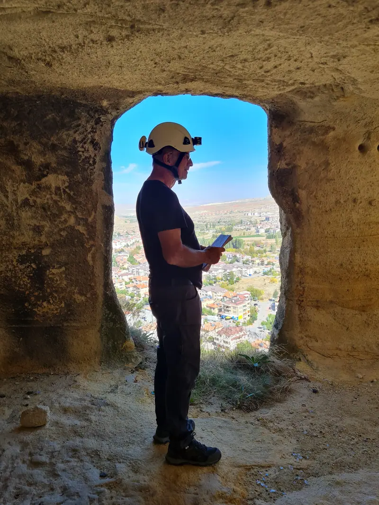

Devam ediyorÜrgüp Yeraltı Yapıları Envanteri
Ürgüp Belediyesi ile imzalanan protokol kapsamında ilçe sınırları içindeki yeraltı şehirleri, yerleşimler ve tüneller belgeleniyor, haritalanıyor ve coğrafi bilgi sistemlerine işleniyor. Amaç, hızlı yapılaşma karşısında risk altındaki bu mirası kayıt altına almak ve korumaya almak.
Ürgüp Belediyesi